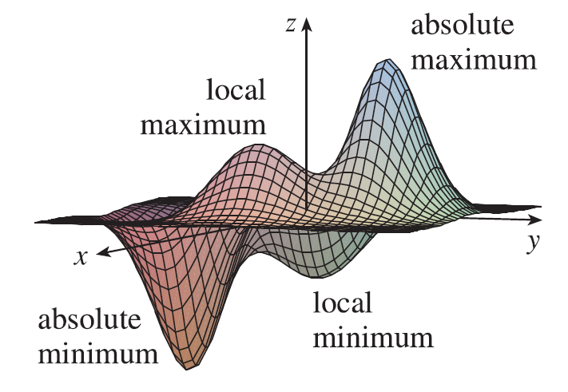

Look at the hills and valleys in the graph of \(f\) shown in Figure There are two points \((a, b)\) where \(f\) has a local maximum, that is, where \(f(a, b)\) is larger than nearby values of \(f(x, y)\). The larger of these two values is the absolute maximum. Likewise, \(f\) has two local minima, where \(f(a, b)\) is smaller than nearby values. The smaller of these two values is the absolute minimum.
Definition: Local maximum & minimum: A function of two variables has a local maximum at \((a, b)\) if \(f(x, y) \le f(a, b)\) when \((x, y)\) is near \((a, b)\). [This means that \(f(x, y) \le f(a, b)\) for all points \((x, y)\) in some disk with center \((a, b)\).] The number \(f(a, b)\) is called a local maximum value. If \(f(x, y) \ge f(a, b)\) when \((x, y)\) is near \((a, b)\), then \(f\) has a local minimum at \((a, b)\) and \(f(a, b)\) is a local minimum value.
If the inequalities in Definition hold for all points \((x, y)\) in the domain of \(f\), then \(f\) has an absolute maximum (or absolute minimum) at \((a, b)\).